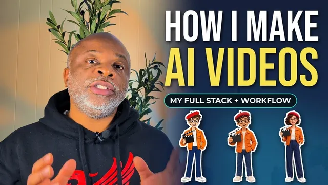
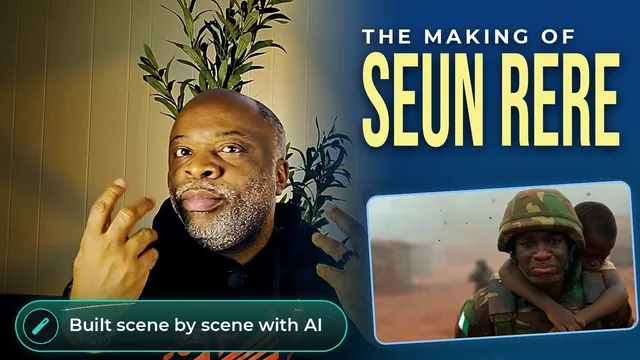
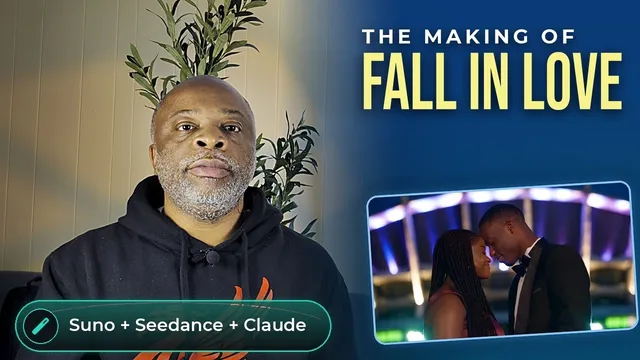

Videos
About My Videos
On my YouTube channel I make AI music videos and short films, using tools like Suno for music, Higgsfield and Seedance for visuals, and Claude to tie the workflow together. Then I break down exactly how each one was made.
AI Music Videos & Films
Music videos and short films I've produced end to end with AI tools.
Behind the Scenes
How I make them: the tools, prompts and workflow behind each video.

16:48How I Actually Make AI Videos (My Full Stack & Workflow)
12:04
How I Made an NYSC Music Video with AI | The Making of “I Love This Family”

13:51How I Made an AI Music Video From Scratch | The Making of Seun Rere

13:05How I Made an AI Orchestral Music Video of D'banj's “Fall in Love” | Suno, Seedance & Claude
Tech Reviews
Hands-on impressions of the gear I use day to day.